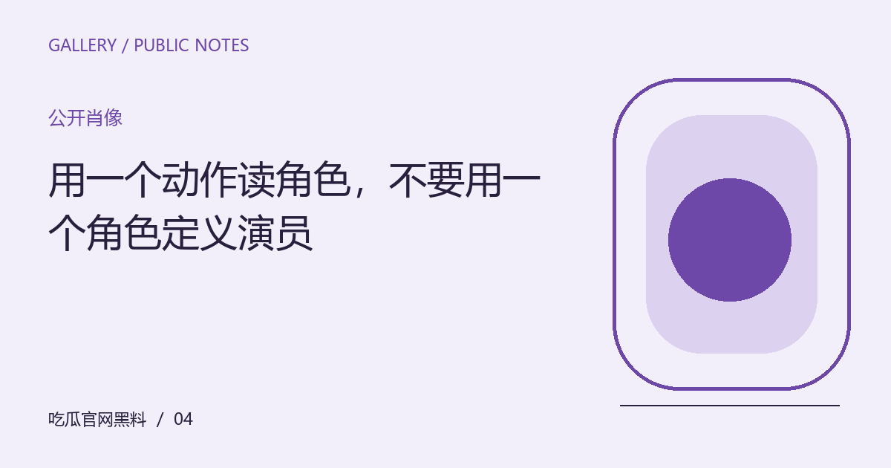
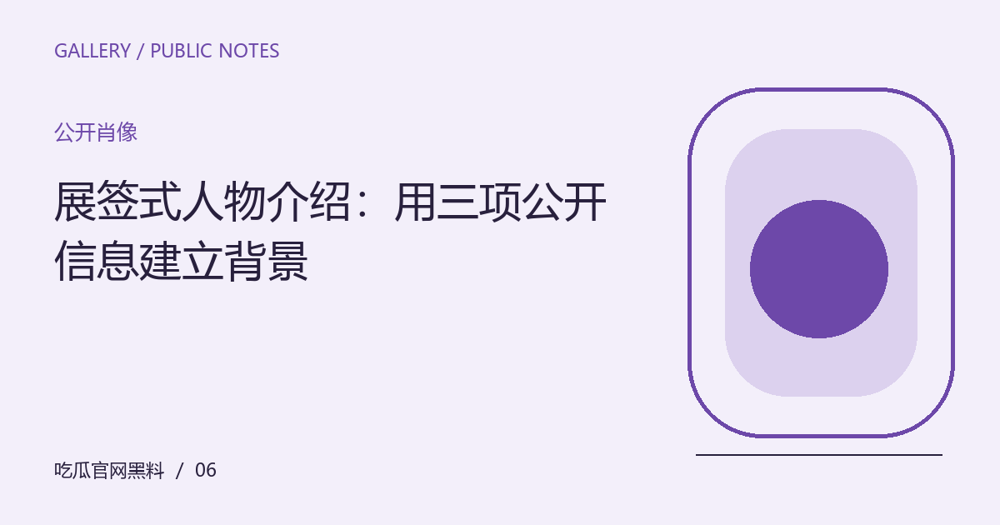

内容索引 / ARTICLE INDEX全部文章
按主题查找12篇编辑文章。搜索会在当前静态内容中匹配标题、摘要与栏目，无需后台服务。
全部12篇内容

议题展厅不从立场开始，而从问题进入。让不同文章分别承担背景、细节和解释的角色，把零散热议组织成一条可以慢慢走的路线。

议题展厅从展墙到手机缩略图，海报被观看的尺寸与位置会改变注意顺序。讨论视觉表达时，先说明自己正在看哪个版本。

公开肖像把回答重新接回提问，区分假设、转述、玩笑与明确主张。语气可以帮助理解，但不应代替文本实际表达的内容。

公开肖像角色、表演者与创作者的立场并不是同一个层面。沿着一场戏观察选择与后果，可以让讨论保持具体而有分寸。

创作现场灯光、机位与声音都参与舞台表达。只看一个传播片段时，明确可观察范围，避免把局部感受写成完整演出结论。

公开肖像职业角色、公开作品和讨论所需的时间范围，往往比一个夸张人物标签更有用。短介绍也可以保持准确与开放。

创作现场可以分析色彩、材质与叙事功能，也可以比较造型如何变化。把观察对象放回创作，避免让讨论滑向外貌羞辱。

创作现场预告是一种压缩和选择。比较宣传与作品时，区分明确承诺、类型暗示与观众自己的推测，才能准确指出落差。

观看视角顺序、反应镜头和音乐都会改变理解。通过一个明确片段观察情绪如何被组织，比猜测人物真实动机更可验证。

观看视角作品可以在新的生活经验里获得另一种意义。重看时区分文本变化、观看条件与自身变化，不把新的感受写成唯一进步。

议题展厅出处只是一条线索，更重要的是表达在不同场合承担什么作用。区分自嘲、引用和指向他人的攻击，保留语言的复杂性。

观看视角一份好专题不必消除所有疑问。记录一个有依据的观察、一个分歧与一个待查问题，让阅读能够延续到下一次。
没有匹配的文章。请更换关键词，或清空搜索查看全部内容。